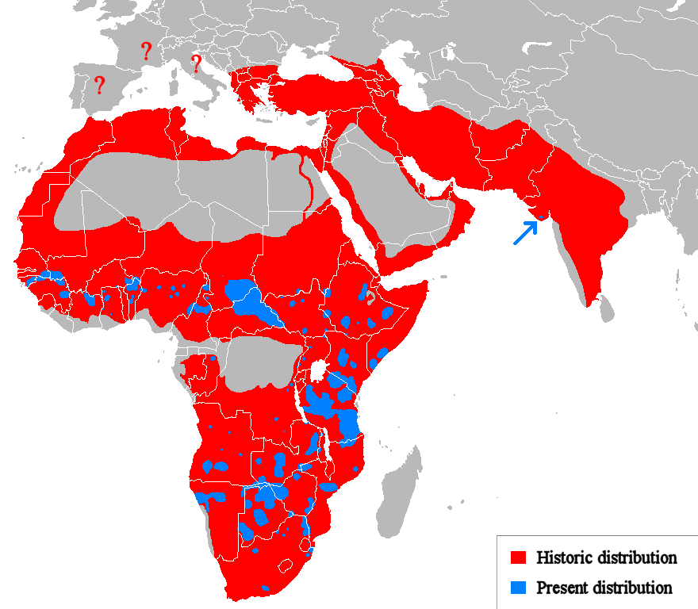

What do they look like?
The West African lion's fur varies in colour from light buff to dark brown. It has rounded ears and a black tail tuft. The male lions on average from head-to-body are 2.47-2.84m. The females are smaller and weigh less than the male ones. However, all the West African lions are smaller than lions from Eastern or Southern Africa. Additionally, they have smaller manes than the other lions in the African region.
Where are the located exactly?
The West African lion (Panthera leo senegalensis) is distributed south of the Sahara from Senegal in the west to Nigeria in the east. The population in West Africa has lost 99% of its former range. The West African Lion has also been classified as a separate subpopulation, ranging over 5 different countries: Benin, Burkina Faso, Niger, Nigeria and Senegal
Endangered?
The lion population in West and Central Africa was fragmented and estimated as comprising at most 1,800 individuals. The main threats to this subpopulation include large-scale habitat conversion, prey base depletion through unsustainable hunting, and the retaliatory killing of lions. Because they are decreasing in population tremendously, support for conservations are highly needed. They are protected under the US Endangered Species Act at the moment but hopefully more can be done for these creatures